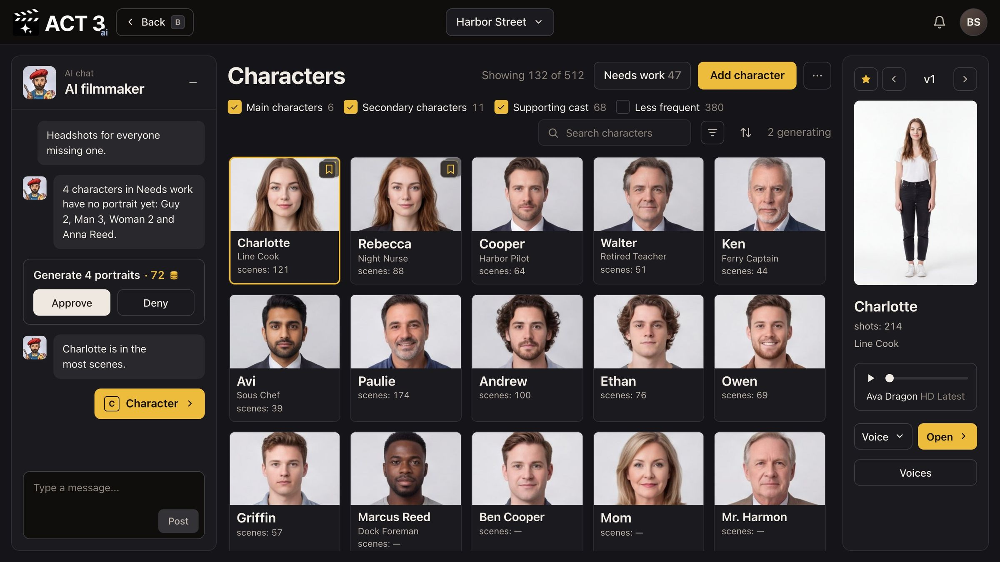

Step 2 of 8
Review one character
Before you add someone new, look at a finished character. Double-click a face, or select it and click Open. Its page shows the five-view character sheet.

What you are looking at
This is one character's page. The name sits in the top bar, with ‹ and › to step through the cast. The page has three parts, top to bottom:
- The character sheet. Five pictures of the same person on a white ground: a shoulders-up headshot on the left, then full-body front, back, left and right views. Every shot this character appears in is drawn from this sheet, so the face, build and costume stay the same from shot to shot.
- The role line and buttons under the sheet: role, job, number of scenes, Generate outfits and Delete character.
- The wardrobe: the outfits this character wears in different scenes.
What to check on a finished sheet
- It is one person in all five views: same face, same hair, same height and build.
- The costume matches the character's first scenes.
- The headshot is clear and evenly lit. It is the reference the AI keeps returning to.
Above the sheet: Edit in Image Builder › opens the Image Builder (step 7), and the drop box Drop images to upload takes new photos for this character. The star and ‹ v3 › let you step through earlier versions of the sheet.
Why you go back to the cast wall next
Now you know what a finished character looks like. Click ‹ Back in the top bar to return to the Characters page and add a new one.